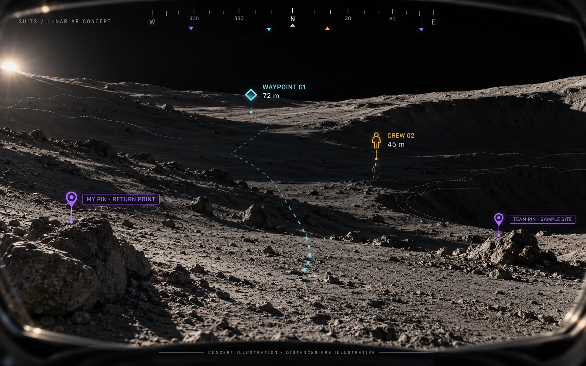

Define the task
InputSimulated EVA
ProcessNavigation + observation
OutputInterface requirements
Identify the navigation, terrain, status, and scientific-recording cues a user would need.
Student challenge proposal · 2021–2022
I led a student team designing a HoloLens 2 interface for simulated lunar fieldwork. The navigation concept would help an astronaut locate waypoints, teammates, and locations pinned by the wearer or other crew members when visibility is poor.
Project at a glance ↓


Astronaut fieldwork combines navigation, terrain awareness, equipment status, and scientific observation. For the Spacesuit User Interface Technologies for Students (SUITS) challenge, our Blinn College team proposed a mixed-reality interface that would bring those cues into the user’s view during simulated extravehicular activity (EVA).
About NASA’s SUITS student challenge ↗
I led the team and served as its primary system designer. I developed the navigation and display concepts, connected the proposed sensing and positioning components, and helped document the design and its evaluation plan. The accompanying concept deck credits me for its concept art and interpretation.
For local positioning, the proposal described a beacon grid and Bluetooth Low Energy (BLE) positioning concept, intended to support navigation where GPS was unavailable. The interface would present waypoint bearing, distance, and relative height using a compass-style display and spatial anchors.
For nearby terrain, the design explored infrared time-of-flight and LiDAR depth sensing to communicate changes in surface shape and obstacles. These were proposed inputs to the HoloLens 2 interface. The concept material does not establish a measured positioning accuracy or an implemented sensor-fusion system.
The intended setting was lunar fieldwork in low visibility. An astronaut should be able to identify a destination, locate another crew member, and return to a location pinned by the wearer or a teammate. Marker shape, labels, direction, distance, and relative height would help distinguish those cues in the display.
The original concept deck used annotated visual references to explain waypoint behavior. The illustration above reconstructs that interface idea using a lunar setting and shared markers. The broader proposal also included suit-status information, geological photographs and annotations, and collaboration with a remote expert.
The evaluation plan connected interface choices to observable tasks: following a route, completing instructions, recognizing terrain shapes, and using voice controls under background noise. Proposed measures included accuracy, completion time, and user feedback. These are evaluation plans from the proposal, rather than reported trial results.
The completed artifacts show how I translate an operational problem into a system design, explain interface behavior visually, coordinate a student team, and define questions that human testing could answer. The original proposal and deck are retained as project records; the public excerpts omit personal contact information.
Explore the proposal’s design stages.
Identify the navigation, terrain, status, and scientific-recording cues a user would need.
Describe how local positioning and nearby terrain sensing could support the display.
Use distinct symbols and labels for destinations, crew members, and personal or shared pins, with direction, distance, and relative-height cues.
Define accuracy, task-time, and usability checks before claiming performance.